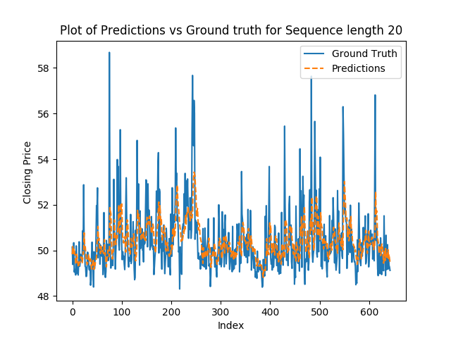
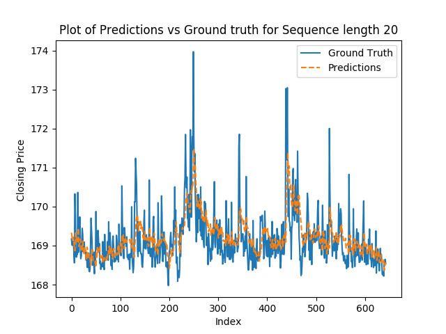
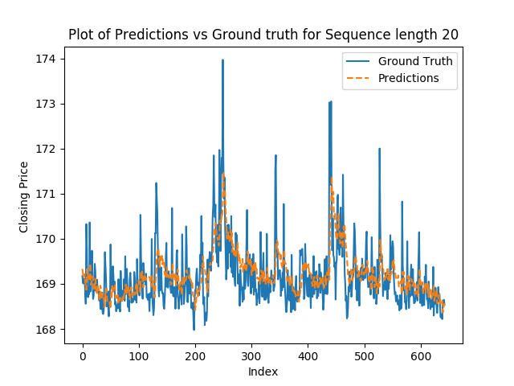
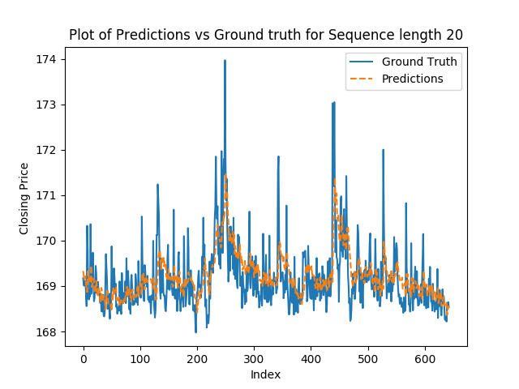
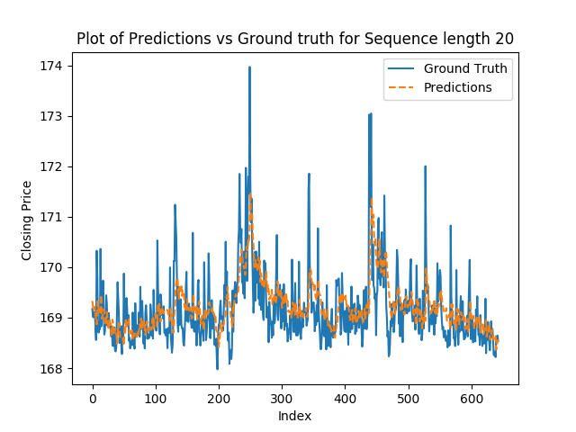

Visualizing Results

 


These images display velocity vectors, pressure contours, and temperature distribution within the chamber.
Introduction to Deep Learning Project at Carnegie Mellon University
Presenting RLFinNet, a novel reinforcement learning-based model tailored for the efficient and rapid forecasting of financial time-series data. Focused on the specific dynamics of individual company stock prices, RLFinNet addresses the need for models that are not only accurate but also quick to adapt to new data, avoiding the influence of irrelevant market factors, but crucially not ignoring them. Our approach enhances the classical deep reinforcement learning framework by incorporating an innovative dual forecasting model, adapted from the OneNet architecture, which leverages both cross-time and cross-variable dependencies to predict future stock prices effectively.

These images display velocity vectors, pressure contours, and temperature distribution within the chamber.
RLFinNet has strong potential for use in the finance industry, particularly for real-time stock market forecasting and financial analytics. Its ability to quickly adapt to new data makes it suitable for high-frequency trading environments where timely predictions are crucial. The model could be applied to portfolio management, helping investors make informed decisions by predicting market trends more efficiently. Additionally, RLFinNet could be useful in risk management by identifying volatility patterns and aiding in the mitigation of financial risks. Its lightweight design also opens possibilities for integration into smaller financial institutions or trading platforms with limited computational resources.
For more information on this project:
Project Report || GithubFor questions or collaboration opportunities, feel free to reach out: